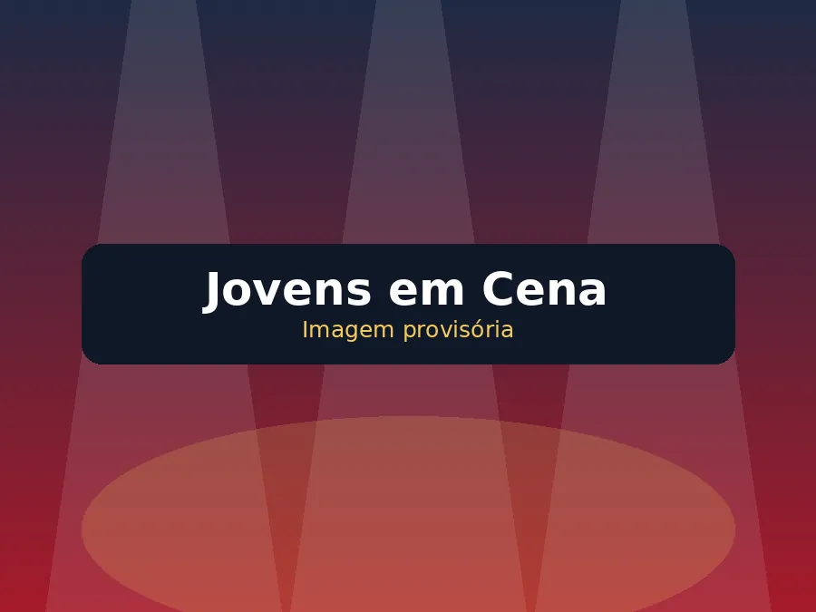
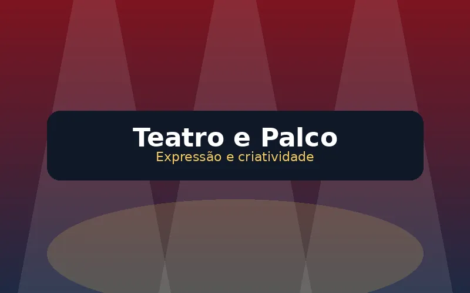
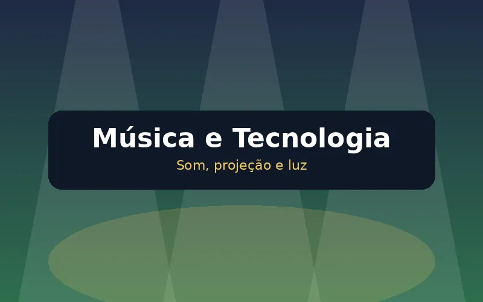
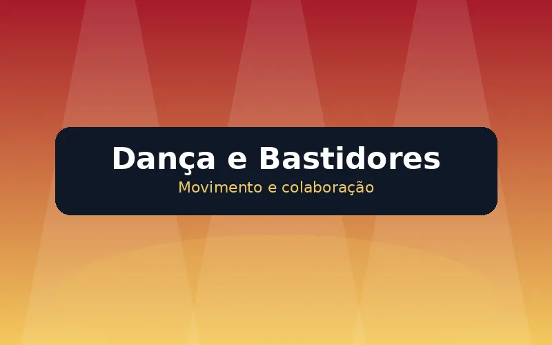

Data
7 de novembro de 2026
Uma noite de criatividade, crescimento e união
Jovens e líderes unidos para criar, aprender e compartilhar talentos por meio da música, do teatro, da dança e de outras manifestações artísticas.
Entrada aberta para jovens, líderes, familiares e visitantes.
7 de novembro de 2026
Das 19h às 22h
Sede da Estaca Pirituba
Aberta para todos
Sobre o festival
O Festival de Artes da Estaca Pirituba será uma noite de apresentações preparadas pelos jovens e líderes das alas participantes.
Cada ala desenvolverá uma produção artística envolvendo criatividade, planejamento, colaboração e diferentes formas de expressão. As apresentações poderão incluir teatro, música, dança, expressão corporal, cenografia, figurinos e outras manifestações artísticas.
Mais do que realizar um espetáculo, o festival tem o propósito de proporcionar experiências que ajudem os jovens a crescer espiritual, intelectual, social e fisicamente.

Crescimento pessoal
A preparação e a participação no festival poderão proporcionar experiências nas quatro áreas de crescimento dos jovens.
Organização do evento
Cinco alas participarão do evento. Cada uma preparará uma apresentação artística e terá um período determinado para utilizar o palco.
Cada ala terá até 20 minutos para realizar sua apresentação artística.
Entre as apresentações haverá um intervalo máximo de 10 minutos.
Aproximadamente 5 minutos serão destinados à retirada e 5 minutos à preparação da próxima ala.
A ordem será definida por sorteio realizado com os bispos e publicada posteriormente.
Cenários, figurinos, músicas, vídeos e equipamentos deverão estar previamente organizados. A próxima ala deverá permanecer preparada e próxima ao palco antes do encerramento da apresentação anterior.
Programação preliminar
Os nomes das alas serão incluídos depois do sorteio realizado com os bispos.
Participação dos jovens
Participar do festival não significa necessariamente atuar no palco. Cada jovem poderá colaborar de acordo com seus interesses, talentos e habilidades.

Atuação, dança, canto, narração e expressão corporal.

Áudio, projeção, iluminação, vídeos e apoio técnico.

Roteiro, cenário, figurino, organização e apoio geral.
Orientação para líderes
Até o final de agosto, cada ala deverá encaminhar as informações necessárias para o planejamento e a organização do festival.
7 de novembro de 2026
Converse com os líderes da sua ala, descubra como você pode ajudar e acompanhe as próximas informações sobre o Festival de Artes.